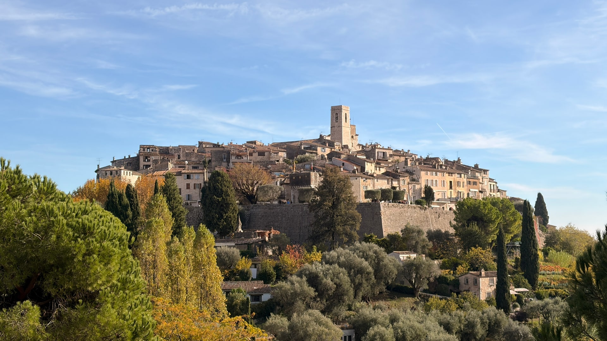
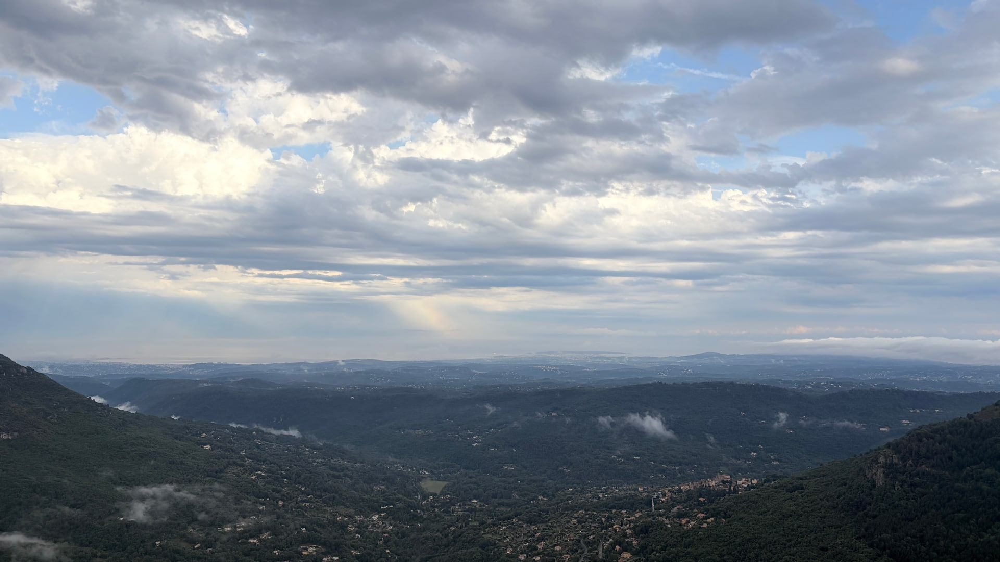
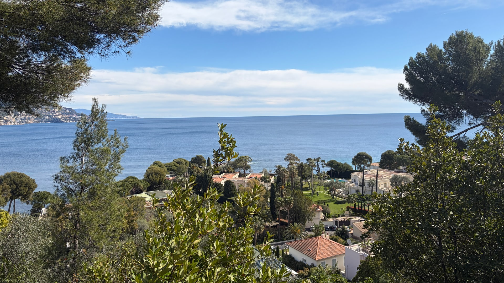
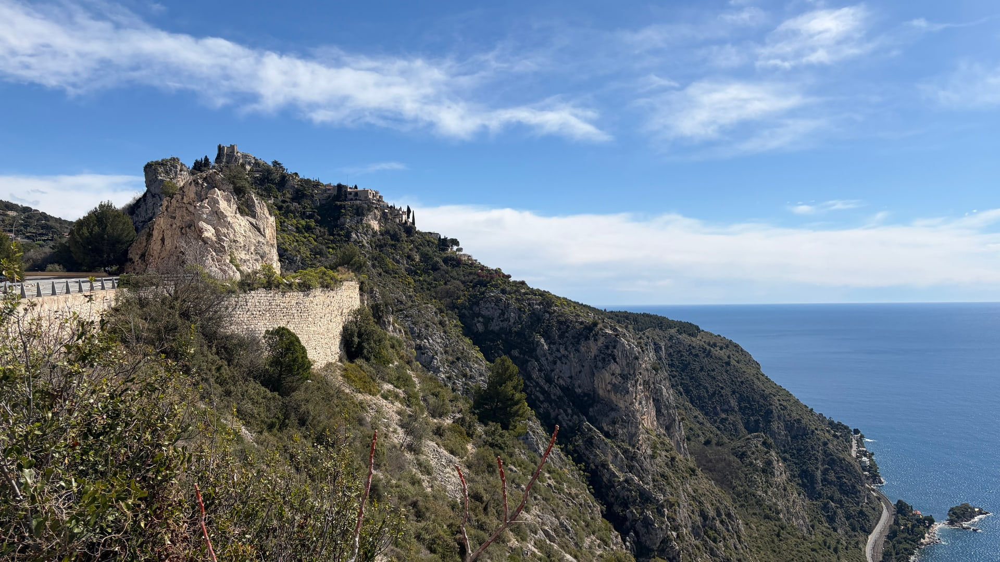
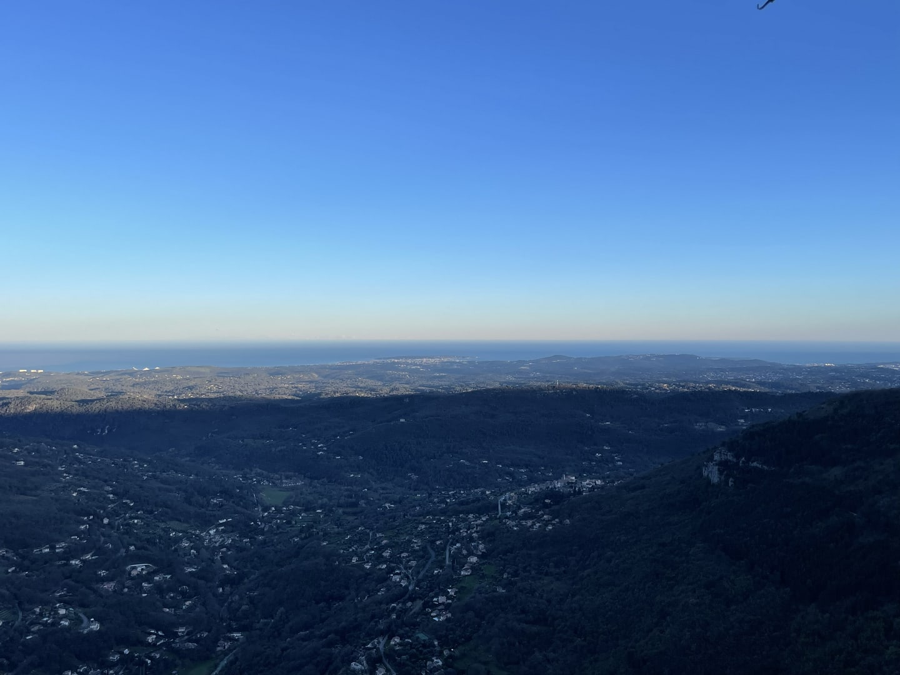

Wine, waterfalls and timeless villages





Discover the authentic French Riviera in one private journey: local wine, medieval art villages, a dramatic mountain gorge and the glamour of Cannes. Travel at your own pace with a personal guide and comfortable transport from Nice.
See the vineyards, cellar and tasting room. Taste local Bellet wines by prior reservation.
Walk through stone lanes, art galleries and medieval ramparts in one of Provence's most beautiful villages.
Enjoy a scenic drive past the famous “violet village”, known for its flowers and perfume heritage.
A short walk to mountain cascades, rocky gorges and a powerful natural panorama.
Explore the clifftop medieval village and take in sweeping views over Cannes, Antibes and the Mediterranean.
Discover the old town, seafront ramparts, marina and relaxed Riviera atmosphere.
Walk the red carpet at the Palais des Festivals and see La Croisette and the yacht-filled port.
Free cancellation 48 hours before start